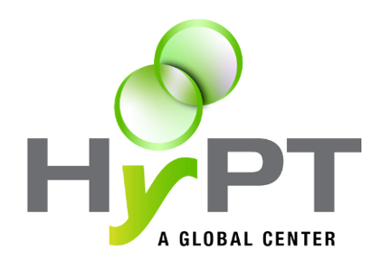

GLOBAL HYDROGEN PRODUCTION TECHNOLOGIES

The Global Hydrogen Production Technologies Center (HyPT) is a £14.1 million (5.2M£ UKRI), five-year international research programme established to accelerate the development of low-cost, net-zero hydrogen production technologies and support their deployment at scale. The Centre brings together researchers across the UK, US, Canada, Australia, Germany and Egypt, combining expertise across hydrogen production, materials, engineering, technology development and wider environmental and societal considerations. HyPT focuses on major technology pathways including water electrolysis, methane pyrolysis and photocatalytic solar water splitting, with the overarching objective of reducing the cost and improving the sustainability of hydrogen production.
At the University of Birmingham, the HyPT programme focuses particularly on the development of novel materials and manufacturing approaches for high-temperature electrolysis, with the aim of achieving very high efficiencies and enabling scalable hydrogen production.
As a Co-Investigator within the Birmingham team, I contribute to the development and scale-up of ceramic electrolyser technologies. My role combines project coordination, financial and resource oversight and hands-on experimental research. This includes materials development, electrochemical testing and the investigation of factors affecting long-term performance and durability. Through HyPT, I also work within a broader international research network, connecting Birmingham's expertise with complementary capabilities across academia and industry.